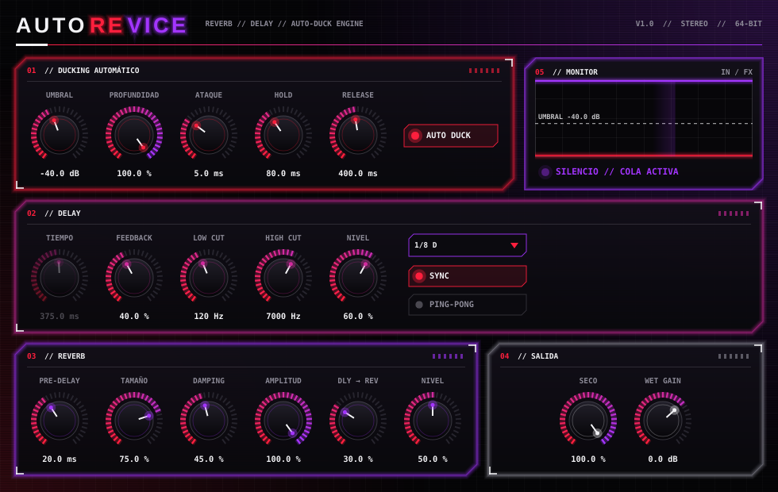

Plugins para que tu música suene distinta.
Cinco herramientas para voces, beats y guitarras: saturación, efectos que se apartan solos, ear candy, acordes rasgueados y color armónico. Hechas con JUCE y pensadas para FL Studio, pero funcionan en cualquier DAW.
NoClipper
ListoEl Soft Clipper de FL Studio, para cualquier DAW.
Controles
- THRES: dónde empieza la saturación suave.
- POST: volumen después del clipper (80 % = 0 dB, igual que en FL).
- Medidor de salida y la curva en tiempo real.
Detalles
- Curva medida con exportaciones reales del Soft Clipper de FL (error cercano a -86 dB).
- Umbral por defecto igual que en FL: -2,14 dBFS.
- VST3 para Windows y Mac, AU para Mac.
AutoReVice
ListoLos efectos se apartan mientras cantas y florecen cuando paras.

Cómo funciona
- El plugin escucha tu voz seca.
- Si pasa el Umbral, baja el delay y la reverb.
- Al callarte, espera el Hold y los efectos vuelven con el Release.
- Las colas nunca se cortan: solo se baja su volumen.
Qué trae
- Delay libre o al tempo (1/1 a 1/32, puntillo, tresillo), ping-pong y filtros.
- Reverb con pre-delay, tamaño, damping y amplitud.
- Sin sidechain ni ruteos: todo pasa dentro del plugin.
MoreSubstance
En pruebas8 efectos para la voz, cada uno en su propia isla. Lo pones una vez y vas prendiendo islas en cada parte del tema.
Las islas
- Phone+: teléfono con señal rota (barras 1-5, wobble, cortes).
- Octave: una o dos octavas abajo. Filter Sweep: pad XY y barrido al tempo.
- Stutter y Tape Stop: cortes rítmicos y frenada de cinta.
- Delay Throw, Reverse y Freeze: ecos, entradas al revés y colas congeladas.
Pensado para
- Adornos entremedio de la canción sin abrir 8 plugins distintos.
- Automatizar cada isla en el playlist de FL Studio.
- Interfaz de rack futurista que se agranda arrastrando la esquina.
GuitarTowers
En pruebasEscribe el acorde en el piano roll y GuitarTowers lo rasguea como una guitarra de verdad.
Cómo se toca
- Apila las notas del acorde en el piano roll; el plugin las separa como una uñeta.
- RASGUEO de seco a abierto. Si ya usaste el Strum de FL, ponlo en 0.
- Patrones: Pop, Balada, Reggaetón, Rock, Arpegio, Bachata, Manual y 4 propios.
Sonidos
- Acústica, Nylon, Eléctrica y Crunch, sintetizadas (sin samples).
- Tono, Cuerpo, Reverb, Velocidad y Humanize.
- Es un instrumento: en FL va como canal, no en el mixer.
GPoint
En pruebasBusca el punto de color que más te gusta de tu voz y dale armónicos solo ahí.
Cada punto
- WIDTH: qué tan ancha es la zona.
- DRIVE: cuántos armónicos agrega.
- CHARACTER: Tube (cálido), Tape (suave) o Transistor (agresivo).
Trucos
- Shift + clic sobre un punto: escuchas solo esa franja.
- Arrastrar: horizontal = frecuencia, vertical = drive.
- MIX, OUTPUT y AUTO GAIN globales.
Descargas
Elige el plugin y tu sistema. Cada descarga es un .zip.
AutoReVice
VST3 · AU · CLAP · LV2 · Standalone
MoreSubstance
En pruebas. Disponible pronto para Windows, Mac y Linux.
GuitarTowers
En pruebas. Disponible pronto para Windows, Mac y Linux.
GPoint
En pruebas. Disponible pronto para Windows, Mac y Linux.
Cómo instalar
- Descomprime el .zip.
- Windows: copia la carpeta
.vst3aC:\Program Files\Common Files\VST3. - Mac: copia el
.vst3a/Library/Audio/Plug-Ins/VST3y el.component(AU) a/Library/Audio/Plug-Ins/Components. - Linux: copia el
.vst3a~/.vst3y el.lv2a~/.lv2. - Abre tu DAW y busca plugins nuevos. En FL Studio: Options → Manage plugins → Find installed plugins.
xattr -cr /Library/Audio/Plug-Ins/VST3/NombreDelPlugin.vst3 (cambia el nombre por el del plugin).